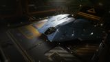

Top speed / boost
294 / 415 m/s
The Cobra Mk V brings five hardpoints, four utilities and nine optional internals to a fast, small hull. It ranks at the top of the small combat bracket — behind only dedicated large-mount specialists on raw alpha — while beating them on flexibility, tank and pad access. A genuine giant-killer that docks anywhere.

This ship's 1–100 suitability rating reflects its fully-engineered fit for this role, scored against every ship in the role. See how ships are rated.
The Cobra Mk V is the modern heir to the legendary Cobra line, and as a combat ship it redefines what a small hull can do. Three medium and two small hardpoints give it five guns — more than any other small fighter except the specialist gunboats — while four utility mounts and nine optional internals let it carry a full defensive suite and tank like a much larger ship.
Crucially, it keeps small-pad access: it docks at every outpost in the galaxy, reaching combat zones and turn-ins that lock out medium and large warships. Fast, well-armed and surprisingly tough, it's the small ship that bridges the gap to the mediums — a giant-killer that can clear a RES, defend a run and still slip into the tightest outpost.
Small-pad combat: RES bounty hunting, low-to-medium conflict zones, pirate massacres and mixed mission-board fighting — anywhere a fast, well-armed, outpost-docking fighter that survives mistakes is wanted.
Four things make the Mk V the top all-round small combat ship:
Its class-4 power plant and distributor cap how much it can run and sustain, and three mediums plus two smalls deal less alpha than the Vulture's or Kestrel's two large mounts. Against a fully-engineered medium it's outmatched and should pick its fights. The Mk V's case is breadth, tank and pad access — not peak small-ship alpha.
Both tables rate ships for the combat role specifically. The role column is the hardpoint loadout — the raw weapon mounts behind the damage.
| Ship | Class | Hardpoints | Pros & cons vs Cobra Mk V | Rating |
|---|---|---|---|---|
| Kestrel Mk II | Small | 3L 2S | Three large mounts — freakish small-pad alphaNewer; shallower internals; less tank | 85 |
| Vulture | Small | 2L | Two large guns; superb agilityPower-starved; only two guns; less room | 80 |
| Cobra Mk V this | Small | 3M 2S | — this hull (baseline) | 78 |
| Imperial Courier | Small | 3M | Superb shields; very fastFewer guns; paper hull without shields | 70 |
| Viper Mk IV | Small | 2M 2S | Tough; cheap; forgivingFewer guns; less room and speed | 66 |
| Viper Mk III | Small | 2M 2S | Fast; cheap; agileFragile; little room | 63 |
| Diamondback Scout | Small | 2M 2S | Cool-running; four utilitiesModest guns and speed | 60 |
| Cobra Mk III | Small | 2M 2S | Cheap; versatile classicThinner defences; fewer guns | 58 |
| Eagle Mk II | Small | 3S | Best agility; dirt cheapTiny guns; eggshell hull | 55 |
| Sidewinder Mk I | Small | 2S | Free starterOutclassed by everything | 40 |
The Cobra Mk V is the best all-round small combat ship. The Kestrel and Vulture out-alpha it with large mounts, but neither matches its blend of five guns, four utilities, deep internals and speed. If you want one small fighter that does everything well and docks anywhere, this is the one.
| Ship | Class | Hardpoints | Pros & cons vs Cobra Mk V | Rating |
|---|---|---|---|---|
| Fer-de-Lance | Medium | 1H 4M | Huge mount; elite agility and alphaMedium pad; far pricier; fragile internals | 93 |
| Krait Mk II | Medium | 3L 2M | SLF bay; big guns; deep tankMedium pad; far pricier | 90 |
| Python Mk II | Medium | 4L 2M | Four large mounts; sustained DPSMedium pad; far pricier | 90 |
| Alliance Chieftain | Medium | 2L 1M 3S | Agile tank; military slots; cheap-ishMedium pad; pricier | 88 |
| Vulture | Small | 2L | The small-pad alpha step-upPower-starved; only two guns | 80 |
When the Mk V's class-4 power ceiling starts to limit you, the small-pad next step is a Vulture for more alpha; the real leap is a medium — a Krait Mk II or Python Mk II — that carries several times the firepower and tank, at the cost of small-pad access.
At ~1.48M Cr the hull is cheap, with no rank or permit gate. A combat fit — five engineered guns, shields, reinforcement — costs more in materials than credits, but the all-in figure stays modest for a top-of-class small fighter.
Its low rebuy means you can fly it aggressively without fear of a punishing insurance bill — part of why it's such a good ship to learn medium-tier combat tactics in before committing to an expensive medium.
Top-tier small-pad combat for under 1.5M Cr hull, with a low rebuy. The Mk V lets you fight aggressively and learn without the cost of risking a medium.
There is no combat-specific ARX pre-built built around the Cobra Mk V; buy and outfit it normally through a shipyard.
A five-gun shield-tank combat fit. Initial is buy-only; A-rated is the combat-ready baseline; Engineered applies the house combat pattern. The deep optionals let it tank harder than any small rival.
| Slot | Initial · buy-only | A-Rated · no eng | Engineered |
|---|---|---|---|
| Hardpoints | |||
| Medium 1 | Pulse Laser 2 | Multi-Cannon 2 | MC 2 — Overcharged + Corrosive |
| Medium 2 | Multi-Cannon 2 | Multi-Cannon 2 | MC 2 — Overcharged |
| Medium 3 | Multi-Cannon 2 | Beam Laser 2 | Beam 2 — Thermal Vent |
| Small 1 | Multi-Cannon 1 | Pulse Laser 1 | Pulse 1 — Efficient |
| Small 2 | Multi-Cannon 1 | Pulse Laser 1 | Pulse 1 — Efficient |
| Utility Mounts | |||
| Utility 1 | Shield Booster | Shield Booster | Shield Booster — Heavy Duty |
| Utility 2 | — | Shield Booster | Shield Booster — Heavy Duty |
| Utility 3 | — | Chaff Launcher | Chaff Launcher |
| Utility 4 | — | Heat Sink Launcher | Heat Sink Launcher |
| Core Internals | |||
| Power Plant (4) | E | A | A — Overcharged (G5) |
| Thrusters (4) | E | A | A — Dirty Drive Tuning (G5) |
| FSD (4) | E | A | A — Increased Range (G3) |
| Life Support (3) | E | D | D — Lightweight |
| Power Distributor (4) | E | A | A — Charge Enhanced (G5) |
| Sensors (3) | E | D | D — Lightweight |
| Fuel Tank (4) | C | C | C |
| Optional Internals | |||
| Optional 5 | Shield Generator 5 | Shield Generator 5 (bi-weave) | Bi-Weave 5 — Resistance Augmented |
| Optional 4 | Cargo Rack 4 | Shield Cell Bank 4 | SCB 4 |
| Optional 4 | — | Hull Reinforcement 4 | HRP 4 — Heavy Duty |
| Optional 4 | — | Hull Reinforcement 4 | HRP 4 — Heavy Duty |
| Optional 3 | — | Shield Cell Bank 3 | SCB 3 |
| Optional 3 | — | Module Reinforcement 3 | Module Reinforcement 3 |
| Optional 3 | — | Hull Reinforcement 3 | HRP 3 — Heavy Duty |
| Optional 2 | — | Module Reinforcement 2 | Module Reinforcement 2 |
| Optional 1 | — | Detailed Surface Scanner | Heat Sink storage |
Nine optionals let the Mk V carry a real shield-and-reinforcement stack no other small ship can match. Shield-tank it with a bi-weave, cell banks and Heavy-Duty reinforcement — it'll survive fights that destroy lighter fighters.
Buy the hull (~1.48M Cr) and fit the largest shield the class-5 bay allows plus a hull reinforcement.
Arm the three mediums with gimballed multi-cannons and the smalls with pulse lasers for shield-stripping.
Fill utilities with shield boosters and chaff; even unengineered it's a strong RES fighter.
A-rating priority for a five-gun small fighter:
Five guns plus shields and boosters strain a class-4 plant and distributor — A-rate and Overcharge/Charge-Enhance them early or manage fire groups carefully.
The house combat pattern on a small all-rounder. Pin blueprints for remote G1→G5 application; visit in person for experimentals.
| Module | Blueprint | Experimental | Engineer |
|---|---|---|---|
| Power Plant | Overcharged (G5) | Thermal Spread | Hera Tani |
| Thrusters | Dirty Drive Tuning (G5) | Drag Drives | Professor Palin / Mel Brandon |
| Multi-Cannons | Overcharged (G5) | Corrosive Shell (one) | Tod McQuinn |
| Pulse / Beam | Efficient (G5) | Thermal Vent | Broo Tarquin |
| Power Distributor | Charge Enhanced (G5) | Super Conduits | The Dweller |
| Bi-Weave Shield | Resistance Augmented (G5) | Fast Charge | Lei Cheung |
| Shield Boosters | Heavy Duty (G5) | Super Capacitors | Didi Vatermann |
| Hull Reinforcement | Heavy Duty (G5) | Deep Plating | Selene Jean |
Moderate — a small hull means small-class modules and lighter material costs than a medium. With a complete inventory this is spend, not farm. Ask for exact per-blueprint counts if needed.
Approximate progression across the three states (figures are representative, not exact rolls):
| Stat | Initial | A-rated | Engineered |
|---|---|---|---|
| Top speed (boost) | 415 m/s | 415 m/s | ~490 m/s |
| Shield (MJ) | ~330 | ~470 | ~850 |
| Armour (eff.) | 324 | 324 | ~1,400+ |
| Sustained DPS | medium-high | high | high (for class) |
| Pad access | small (anywhere) | small | small |
Engineered, the Cobra Mk V tanks like a small medium — an 850 MJ shield and effective armour past 1,400 — while boosting near 490 m/s and firing five guns. No other small ship combines this much firepower, tank and speed with universal pad access.
Any Haz RES near an outpost suits it — the small pad lets you base and turn in where larger fighters can't. Around your home base, RES and massacre payouts double as Imperial-standing progress.
The Cobra Mk V is the finest all-round small combat ship in the game: five guns, four utilities, medium-grade tanking and 415 m/s of boost, all from a hull that docks at any outpost. The dedicated gunboats out-alpha it, but nothing in its class matches its blend of firepower, toughness and reach. A giant-killer, and a joy to fly.
Figures on this page are verified against the sources below.